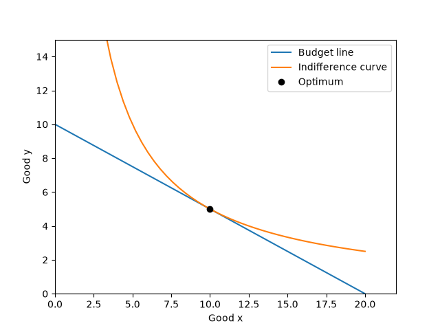
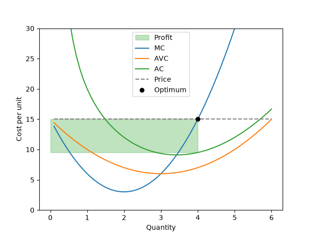

第 10 章: SciPy による最適化¶
10.1 この章の地図¶
経済学には、最大化や最小化の問題が、いたるところに出てきます。消費者は、予算の範囲で効用を最大にします。企業は、利潤を最大に、または費用を最小にします。この章では、そのための道具として、SciPy の最適化を使います。
| 項目 | 内容 |
|---|---|
| 経済学の題材 | 効用最大化、利潤最大化（P = MC、操業停止点）、費用最小化（マインドマップ 5-1, 5-2） |
| 使う Python の機能 | scipy.optimize の minimize（制約付き）、minimize_scalar、brentq（解を求める）、無名関数（lambda）、f 文字列、結果の属性（.x・.success） |
| 新しく導入するライブラリ | SciPy（科学技術計算） |
| 完成形 | maximize_utility、profit_maximizing_quantity、minimize_cost |
| ファイル | 実装: lib/chapter10/optimization.py、lib/chapter10/plot.py（効用最大化・利潤最大化の図）／テスト: test/chapter10/test_optimization.py、test/chapter10/test_plot.py（自分で書くときは、practice/chapter10/ に、同じ名前で作ります） |
経済学の式とコードの対応¶
| 経済学 | 式 | コード |
|---|---|---|
| 効用最大化 | max x^α·y^(1−α)、予算 Px·x + Py·y = m | maximize_utility |
| 最適消費点の条件 | 限界代替率 MRS = Px ÷ Py | 第 4 章の marginal_rate_of_substitution |
| 利潤最大化 | P = MC（限界費用が右上がりの部分） | profit_maximizing_quantity |
| 操業停止点 | 価格が平均可変費用の最低値を下回ると生産しない | 同上 |
| 費用最小化 | min w·L + r·K、産出量 L^0.5·K^0.5 = Q | minimize_cost |
記号について: この章の r は、資本の価格（資本を使う費用）です。第 13 章の r は、利子率で、別のものです。L は労働量（第 13 章の L は、貨幣需要）、Q は産出量（市場の数量ではありません）、m は消費者の所得（予算）、w は賃金、K は資本量です。一覧は、記号について を参照してください。
第 4 章で作った、費用関数と効用関数を、そのまま使います。
10.2 予想する¶
手計算で、次の問いに答えてください。
- 価格が Px = 2、Py = 4、所得が 40 で、効用が U = x^0.5 · y^0.5 のとき、最適な消費は、財 x と財 y をいくつずつ買う点ですか。ヒント: 予算の半分ずつを、それぞれの財に使います
- 第 4 章の費用関数で、価格が 15 のとき、利潤を最大にする生産量は、いくつですか。ヒント: MC = 3q² − 12q + 15 が 15 に等しくなる q を求めます
- 価格が 5 のとき、企業は生産しますか。平均可変費用の最低値は 6 です
10.3 SciPy の最適化¶
1 変数の最小化¶
minimize_scalar は、1 つの変数の関数の、最小値を探します。範囲を bounds で指定します。
from scipy.optimize import minimize_scalar
result = minimize_scalar(lambda q: (q - 3) ** 2 + 1, bounds=(0, 10), method="bounded")
result.x # 3.0 最小になる q
result.fun # 1.0 そのときの値
lambda q: ... は、名前を付けずに、その場で作る小さな関数です。
解を求める¶
brentq は、関数の値が 0 になる点を、範囲の中で探します。範囲の両端で、値の符号が逆でなければなりません。第 6 章の二分法と同じ考え方で、より速く収束します。
from scipy.optimize import brentq
brentq(lambda q: q**2 - 4, 0, 10) # 2.0 q² − 4 = 0 の解
制約付きの最小化¶
minimize は、複数の変数の関数を、制約のもとで最小にします。最大化したいときは、符号を逆にした関数を最小にします。
from scipy.optimize import minimize
result = minimize(
lambda v: v[0] ** 2 + v[1] ** 2, # 最小にする関数
x0=[1.0, 1.0], # 探し始める点
constraints={"type": "eq", "fun": lambda v: v[0] + v[1] - 2}, # 制約: x + y = 2
method="SLSQP",
)
result.x # array([1., 1.])
"eq" は、制約の関数が 0 になる、という等式制約です。
読み方の補足¶
この章のコードに出てくる、小さな書き方です。
| 書き方 | 意味 |
|---|---|
f"利子率は {rate}% です" |
f 文字列。文字列の前に f を付けると、{ } の中の式が、値に置き換わる |
result.x・result.fun・result.success・result.message |
最適化の結果。解、最小値、成功したか、メッセージ |
bounds=[(a, b), ...] |
変数ごとの、下限と上限。None は、制限なし |
_EPSILON のように、先頭が _ の名前 |
そのファイルの中だけで使う、という約束（外から使わない） |
rate = 5
f"利子率は {rate}% です" # '利子率は 5% です'
10.4 プログラミング¶
効用最大化¶
予想した答えを、テストにします。さらに、「最適な点では、限界代替率が価格比に等しい」という経済学の性質も、テストで確かめます。
def test_効用最大化の消費点は所得の半分ずつを使う点() -> None:
# 価格 (2, 4)、所得 40、alpha = 0.5。x* = 0.5 * 40 / 2 = 10、y* = 0.5 * 40 / 4 = 5
x, y = maximize_utility(price_x=2, price_y=4, income=40)
assert x == pytest.approx(10, abs=1e-4)
assert y == pytest.approx(5, abs=1e-4)
def test_最適消費点では限界代替率が価格比に等しい() -> None:
x, y = maximize_utility(price_x=2, price_y=4, income=40)
assert marginal_rate_of_substitution(x, y) == pytest.approx(2 / 4, abs=1e-4)
def test_最適消費点は予算をちょうど使い切る() -> None:
x, y = maximize_utility(price_x=2, price_y=4, income=40)
assert 2 * x + 4 * y == pytest.approx(40, abs=1e-6)
def maximize_utility(
price_x: float, price_y: float, income: float, alpha: float = 0.5
) -> tuple[float, float]:
"""予算 price_x·x + price_y·y = income のもとで、効用を最大にする (x, y) を返す。"""
if price_x <= 0 or price_y <= 0:
raise ValueError("財の価格は正でなければならない")
if income <= 0:
raise ValueError("所得は正でなければならない")
result = minimize(
lambda v: -cobb_douglas_utility(v[0], v[1], alpha),
x0=[income / (2 * price_x), income / (2 * price_y)],
bounds=[(_EPSILON, None), (_EPSILON, None)],
constraints={
"type": "eq",
"fun": lambda v: price_x * v[0] + price_y * v[1] - income,
},
method="SLSQP",
options={"ftol": 1e-12},
)
if not result.success:
raise RuntimeError(f"効用最大化が収束しなかった: {result.message}")
return float(result.x[0]), float(result.x[1])
効用を最大にするために、効用の符号を逆にした値（-cobb_douglas_utility(...)）を最小にしています。財の量が負にならないよう、bounds で下限を、ほぼ 0 の _EPSILON（1e-9）にしています。探し始める点 x0 は、予算の半分ずつを使う点です。
結果は、価格 (2, 4)、所得 40 のとき (10.0, 5.0) で、手計算と一致します。財 x の比重 α を 0.75 にすると、手計算の (15, 2.5) に対して、(14.999999512744836, 2.5000002436275817) になります。数値計算の誤差が、小数点以下 7 桁目に出ています。
def test_財xの比重が大きいと財xを多く買う() -> None:
# alpha = 0.75: x* = 0.75 * 40 / 2 = 15、y* = 0.25 * 40 / 4 = 2.5
x, y = maximize_utility(price_x=2, price_y=4, income=40, alpha=0.75)
assert x == pytest.approx(15, abs=1e-4)
assert y == pytest.approx(2.5, abs=1e-4)
最適な点の効用が、予算線上のほかの点より大きいことも、テストにします。
def test_最適消費点の効用はほかの予算内の点より大きい() -> None:
x, y = maximize_utility(price_x=2, price_y=4, income=40)
best = cobb_douglas_utility(x, y)
# 予算線上の別の点 (x, y) = (5, 7.5) と (15, 2.5)
assert best > cobb_douglas_utility(5, 7.5)
assert best > cobb_douglas_utility(15, 2.5)
効用最大化を、図にします。予算のもとで、最も満足の高い点は、どこでしょうか。

図の読み方:
- 青い線が予算線 2x + 4y = 40 です。財 x だけなら 20 個、財 y だけなら 10 個買えます
- オレンジの曲線が無差別曲線です。この曲線の上の点は、効用が同じ（ここでは、最適点の効用）です。右上にあるほど、効用が高くなります
- 最適点（黒い丸、x = 10、y = 5）で、無差別曲線が予算線に接します。曲線のどの点も、予算線の上か外側にあり、内側の点には、同じ効用の点がありません
- 接するとは、2 つの傾きが等しいことです。無差別曲線の傾き（限界代替率）が、価格の比 2 ÷ 4 に等しい、という、上のテストの条件です
この図は、lib/chapter10/plot.py の plot_utility_maximization が描きます。
利潤最大化と操業停止点¶
利潤最大化の条件 P = MC を、brentq で解きます。ただし、限界費用は U 字型なので、P = MC を満たす q が 2 つあります。利潤が最大になるのは、限界費用が右上がりの側（q ≥ 2）です。
def test_価格が15のとき利潤を最大にする生産量は4() -> None:
# P = MC: 15 = 3q^2 - 12q + 15 を解くと q = 4（q = 0 は MC が右下がりの側）
quantity = profit_maximizing_quantity(price=15)
assert quantity == pytest.approx(4)
assert marginal_cost(quantity) == pytest.approx(15)
def test_価格が15のときの最大利潤は22() -> None:
quantity = profit_maximizing_quantity(price=15)
assert 15 * quantity - total_cost(quantity) == pytest.approx(22)
def test_価格が操業停止点の6を下回ると生産しない() -> None:
assert profit_maximizing_quantity(price=5) == 0
def test_価格が操業停止点の6ちょうどなら生産量は3() -> None:
assert profit_maximizing_quantity(price=6) == pytest.approx(3)
# 生産量を探す範囲の上限（下限は 0）
_MAX_QUANTITY = 10
# 数値計算の誤差を許す幅
_EPSILON = 1e-9
def profit_maximizing_quantity(price: float) -> float:
"""価格 price のとき、利潤を最大にする生産量を返す。
P = MC（限界費用が右上がりの部分）を満たす生産量を求める。その生産量で
価格が平均可変費用を下回るなら、操業を停止して、生産しない。
探索範囲（0〜10）の上限での限界費用より高い価格は、受け付けない。
"""
# 限界費用が最低になる生産量。これより右では、限界費用が右上がり
rising_start = float(
minimize_scalar(marginal_cost, bounds=(0, _MAX_QUANTITY), method="bounded").x
)
if price <= marginal_cost(rising_start):
return 0
if price > marginal_cost(_MAX_QUANTITY):
raise ValueError("価格が高すぎて、生産量の探索範囲（0〜10）に解がない")
quantity = float(
brentq(lambda q: marginal_cost(q) - price, rising_start, _MAX_QUANTITY)
)
if price < average_variable_cost(quantity) - _EPSILON:
return 0
return quantity
限界費用の右上がりの部分は、限界費用が最低になる生産量から始まります。その生産量は、第 4 章の係数から手計算で求められます（q = 2）が、ここでは値を式に書かず、minimize_scalar で限界費用の最低点を探しています。第 4 章の費用関数を変えても、第 10 章のコードは変えずに済みます。
操業を停止するかどうかは、P = MC で求めた生産量で、価格が平均可変費用を下回るかどうかで決めます。価格が平均可変費用を下回れば、売るほど損が増えるので、生産しません。限界費用の最低値以下の価格のときは、解を探すまでもなく、生産しません。価格が高すぎて、探索範囲（0〜10）の上限での限界費用を超えるときは、解を探せないので、ValueError にします（SciPy の英語のエラーにしない）。
結果は、価格 15 のとき生産量 3.9999999999996683（≈ 4）、最大利潤は 22 です。第 4 章の練習問題「価格 15、生産量 4 のとき利潤 22」と一致します。価格 6 のとき 3.0、価格 30 のとき 4.999999999999528（≈ 5）、価格 5 のときは生産しないので 0 です。
価格が高いほど、生産量が増えます。マインドマップの「供給曲線は MC の右上がりの部分」が、数値で確かめられました。
利潤最大化を、図にします。価格 15 のとき、企業は、どれだけ生産するでしょうか。

図の読み方:
- 点線が価格（15）です。企業は、価格が限界費用（MC）に等しい点（黒い丸、生産量 4）まで、生産します。MC が価格より低い間は、1 つ作るほど利益が増えるからです
- 緑の長方形が利潤です。高さは、価格と平均費用（AC）の差（15 − 9.5 = 5.5）、幅は生産量 4 で、面積は 22 になります（テストの値と一致します）
- 価格が、AVC の最低点（6）を下回ると、長方形も黒い丸も描かれません。生産しないからです
この図は、lib/chapter10/plot.py の plot_profit_maximization が描きます。第 4 章の費用曲線の図と、同じ曲線です。
費用最小化¶
産出量 Q を作る費用 w·L + r·K を最小にします。生産関数は、効用関数と同じ形（コブ・ダグラス型）の L^0.5 · K^0.5 で、産出量が Q に等しいことが制約です。形が同じでも、効用と産出量は別のものなので、効用関数を流用せず、生産関数 production を別に定義しています。賃金 w = 1、資本の価格 r = 4、産出量 10 のとき、手計算では L = 10 × √(4 ÷ 1) = 20、K = 10 × √(1 ÷ 4) = 5、費用は 20 + 20 = 40 です。
def test_費用最小化では生産要素の価格が高い要素を少なく使う() -> None:
# 賃金 1、資本の価格 4、産出量 10: L* = 10 * sqrt(4 / 1) = 20、K* = 10 * sqrt(1 / 4) = 5
labor, capital, cost = minimize_cost(output=10, wage=1, rental=4)
assert labor == pytest.approx(20, abs=1e-3)
assert capital == pytest.approx(5, abs=1e-3)
assert cost == pytest.approx(40, abs=1e-3)
def test_費用最小化の解は目標の産出量を満たす() -> None:
labor, capital, _ = minimize_cost(output=10, wage=1, rental=4)
assert production(labor, capital) == pytest.approx(10, abs=1e-4)
# 生産量を探す範囲の上限（下限は 0）
_MAX_QUANTITY = 10
# 数値計算の誤差を許す幅
_EPSILON = 1e-9
# 生産関数 Q = L^0.5 · K^0.5 の、労働の指数
_LABOR_SHARE = 0.5
def production(labor: float, capital: float) -> float:
"""生産関数 Q = L^0.5 · K^0.5（コブ・ダグラス型）。第 4 章の効用関数とは別。"""
if labor < 0 or capital < 0:
raise ValueError("生産要素の量は 0 以上でなければならない")
return float(labor**_LABOR_SHARE * capital ** (1 - _LABOR_SHARE))
def minimize_cost(
output: float, wage: float, rental: float
) -> tuple[float, float, float]:
"""産出量 output を作る費用 wage·L + rental·K を最小にする (L, K, 費用) を返す。
生産関数は、コブ・ダグラス型 Q = L^0.5 · K^0.5（上の `production`）。
"""
if output <= 0:
raise ValueError("産出量は正でなければならない")
if wage <= 0 or rental <= 0:
raise ValueError("生産要素の価格は正でなければならない")
result = minimize(
lambda v: wage * v[0] + rental * v[1],
x0=[output, output],
bounds=[(_EPSILON, None), (_EPSILON, None)],
constraints={
"type": "eq",
"fun": lambda v: production(v[0], v[1]) - output,
},
method="SLSQP",
options={"ftol": 1e-12},
)
if not result.success:
raise RuntimeError(f"費用最小化が収束しなかった: {result.message}")
return float(result.x[0]), float(result.x[1]), float(result.fun)
結果は、(19.999999881893576, 5.00000002952655, 39.99999999999977) で、手計算の (20, 5, 40) と一致します。価格が高い資本（r = 4）を少なく、安い労働（w = 1）を多く使っています。
解がないときの扱い¶
実行可能な点がない入力（所得や産出量が 0 以下、価格が 0 以下）は、ソルバーに渡す前に、ValueError にします。SciPy の収束の失敗に任せると、原因が分かりにくく、SciPy のバージョンで挙動も変わりうるためです。価格が高すぎて、探索範囲に解がない場合も、同じです。
def test_所得が0以下なら効用最大化はできない() -> None:
with pytest.raises(ValueError, match="所得"):
maximize_utility(price_x=2, price_y=4, income=-40)
with pytest.raises(ValueError, match="所得"):
maximize_utility(price_x=2, price_y=4, income=0)
def test_産出量が0以下なら費用最小化はできない() -> None:
with pytest.raises(ValueError, match="産出量"):
minimize_cost(output=-10, wage=1, rental=4)
with pytest.raises(ValueError, match="産出量"):
minimize_cost(output=0, wage=1, rental=4)
入力が正しくても、最適化が収束しないことがあります。見かけ上は数値でも、収束していない結果を返さないために、result.success を、必ず確かめて、収束しなかったときは RuntimeError にします（テストでは、ソルバーを、失敗を返す偽物に差し替えて、確かめています）。
予想の答え合わせ¶
予想した答えを、プログラムで確かめます。
from lib.chapter10.optimization import maximize_utility, profit_maximizing_quantity
x, y = maximize_utility(price_x=2, price_y=4, income=40)
print("最適な消費 (x, y):", round(x, 4), round(y, 4))
print("価格 15 の生産量:", round(profit_maximizing_quantity(15), 4))
print("価格 5 の生産量:", profit_maximizing_quantity(5))
最適な消費 (x, y): 10.0 5.0
価格 15 の生産量: 4.0
価格 5 の生産量: 0
- 1 つ目の問い: 最適な消費は (x, y) = (10.0, 5.0) です。予算 40 の半分ずつ（20 ずつ）を、価格 2 の財 x と価格 4 の財 y に使うので、20 ÷ 2 = 10、20 ÷ 4 = 5 です
- 2 つ目の問い: 価格 15 のとき、利潤を最大にする生産量は 4.0 です。MC = 15 を満たす q は 0 と 4 の 2 つありますが、限界費用が右下がりの側にある q = 0 では、利潤は最大になりません
- 3 つ目の問い: 価格 5 のとき、生産量は 0 です。価格 5 は、平均可変費用の最低値 6 を下回るので、生産しません
実行結果¶
cd apps/economics-programming/python
uv run pytest test/chapter10
29 passed
10.5 規則で言うと¶
- 最大化は、符号を逆にして最小化する。
minimizeは最小化の道具なので、効用の符号を逆にした値を渡す - 数値で解いた結果は、手計算の解と突き合わせる。 許容誤差は、アルゴリズムの精度に合わせて決める（この章では 1e-3〜1e-4）
- 最適化の結果は、収束したかどうかを必ず確かめる。
result.successが偽なら、例外にする
混同しやすい点を、表にまとめます。
| 混同しやすい点 | 違い |
|---|---|
| P = MC を満たす点が 2 つあるとき | 限界費用が右上がりの側が、利潤最大。右下がりの側は、利潤最小（またはその近く） |
| 操業停止点と損益分岐点 | 操業停止点は価格が AVC の最低値（固定費用は回収できなくても、生産した方が損が小さい）。損益分岐点は価格が AC の最低値（利潤が 0） |
| 最適消費点の条件 | 限界代替率 MRS = 価格比 Px ÷ Py。無差別曲線と予算線が接する点 |
このモデルが成り立たない場面¶
数値の最適化は、探し始める点によって、違う解（局所的な最適解）に行き着くことがあります。この章の問題は、効用関数が凹で、制約が直線なので、解が 1 つしかありません。しかし、費用関数や効用関数が複雑になると、解が複数あり、探し始める点を変えて確かめる必要があります。また、この章の SLSQP は、関数が滑らかな場合に使えます。折れ線のような関数では、別の方法が必要です。
10.6 練習問題¶
| 種類 | 問題 |
|---|---|
| 想起 | 本文を閉じて、minimize を使い、「x + y = 2 のもとで x² + y² を最小にする」問題を書いてください |
| 生成 | 解説を見る前に、価格 20 のときの利潤を最大にする生産量を、手計算してから、テストを書いてください（P = MC を解きます） |
| 多様 | 賃金を 4、資本の価格を 1 に入れ替えて、minimize_cost を実行してください。労働と資本の使う量が、どうなるかを予想してから、確かめます |
| 交互 | 第 7 章の equilibrium と、この章の profit_maximizing_quantity を組み合わせて、市場の価格が 20 のとき、価格を所与とする 1 社の供給量がいくつになるかを求めて、市場全体の供給量と比べてください |
解答（先に自分で取り組んでから、開いてください）
想起:
result = minimize(
lambda v: v[0] ** 2 + v[1] ** 2,
x0=[0.0, 0.0],
constraints={"type": "eq", "fun": lambda v: v[0] + v[1] - 2},
method="SLSQP",
)
print(result.x) # [1. 1.]
生成: P = MC は、3q² − 12q + 15 = 20 で、q² − 4q − 5/3 = 0 になります。解のうち、限界費用が右上がりの側（q ≥ 2）は、q = 2 + √(4 + 5/3) = 2 + √(17/3) で、約 4.38 です。
def test_価格20のとき利潤を最大にする生産量() -> None:
quantity = profit_maximizing_quantity(price=20)
assert quantity == pytest.approx(2 + math.sqrt(17 / 3))
多様: 賃金と資本の価格を入れ替えると、使う量も入れ替わります。
labor, capital, cost = minimize_cost(output=10, wage=4, rental=1)
# labor ≈ 5、capital ≈ 20、cost ≈ 40
賃金 1、資本の価格 4 のとき（L = 20、K = 5）と、使う量が入れ替わり、費用は同じ 40 です。高い要素を少なく、安い要素を多く使います。
交互: 市場の均衡価格は、第 7 章の equilibrium で、20 と求まります（数量は 60）。価格受容者の 1 社は、P = MC で、profit_maximizing_quantity(20) が約 4.38 です。市場全体の供給量 60 を満たすには、同じ費用の企業が、60 ÷ 4.38 ≒ 13.7 社、必要になります（市場全体の供給曲線は、企業の数の分だけ、個々の企業の供給量を足したものです）。
10.7 振り返り¶
- 手計算の答えと、数値の答えは、どこまで一致しましたか。違いが出た桁は、何桁目でしたか
- P = MC の解が 2 つあるとき、どちらを選ぶか、どう判断しましたか
- 最適化が収束しなかったとき、何が原因だと思いますか
10.8 まとめ¶
minimize、minimize_scalar、brentqで、最適化と、方程式の解を求めた- 効用最大化・利潤最大化・費用最小化を、手計算の解と突き合わせて確かめた
- 最適化が収束したかどうかを確かめ、解がないときは例外にした
第 2 部はここまでです。次の第 3 部では、pandas で経済データを読み込み、GDP などの指標を計算します。
10.9 第 2 部の到達チェック¶
| できること | 検証の方法 | できた |
|---|---|---|
| 需要曲線・供給曲線を図に描き、余剰と死荷重を求める | 手計算の値と図が一致する | □ |
| 乱数でばらつきを作り、平均が安定することを示す | 理論値と、許容誤差の範囲で一致する | □ |
| 連立方程式と最適化で、均衡と最適点を求める | 手計算の解と一致する | □ |
時間を決めて書く課題¶
何も見ずに、時間を計って、次を書いてください。
- 需要 Q = 120 − 2P、供給 Q = 20 + 3P の均衡を、
np.linalg.solveで求める（10 分） - 所得 60、価格 (3, 2) の消費者が、U = x^0.5 · y^0.5 を最大にする点を、
minimizeで求め、手計算の (10, 15) と比べる（15 分）
誤りの原因の分類¶
| 原因 | 例 | 戻る章 |
|---|---|---|
| 知らない | np.linalg.solve や minimize の使い方が分からない |
第 9・10 章 |
| 見抜けない | 最大化の問題を、どう最小化に直すか決められない | 第 10 章 |
| 混同した | 操業停止点と損益分岐点を取り違えた | 第 4・10 章 |
| 手順の誤り | 収束の確認を忘れた | 第 10 章 |